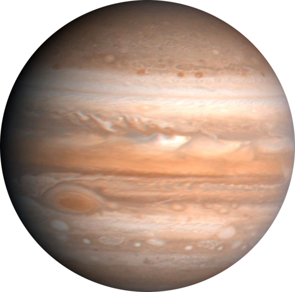
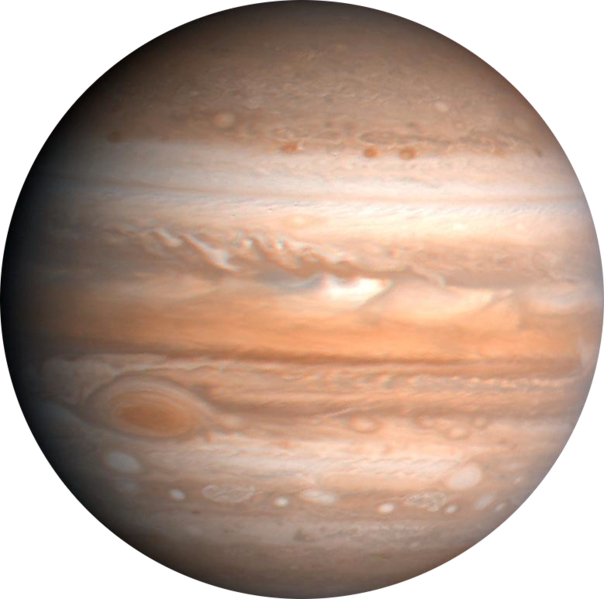
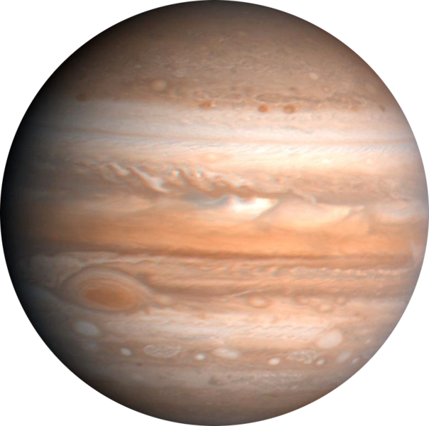

| Earth | Mars | Saturn | Jupiter | |
|---|---|---|---|---|
| Mass(kg) | 5.98 x 10 24 | 6.42 x 10 23 | 5.69 x 10 26 | 1.90 x 10 27 |
| Diameter(km) | 12,576 | 6,787 | 120,660 | 142,800 |
| Mean Density(kg/m3) | 5,520 | 3,940 | 690 | 1,314 |
| Escape Velocity(m/s) | 11,200 | 5,000 | 35,600 | 59,500 |
| Avg Dist from Sun(AU) | 1 | 1.524 | 9.537 | 5.203 |
| Rotational Period(Earth Days) | 1 | 1.026 | 0.44 | 0.41 |
| Revolution Period(Earth Years) | 365.25 | 686.98 | 29.46 | 11.86 |